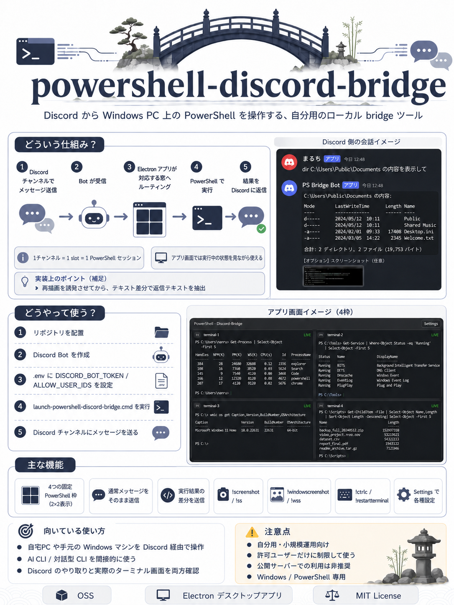

これは何か
Discordをユーザーインターフェースとして使用し、自宅やオフィスのPCでPowerShellスクリプトやコマンドを実行するためのブリッジツールです。Node.jsとDiscord.jsを使用して構築されており、チャット画面からPCをリモート操作することを目的としています。
何ができるか
Discordの特定のチャンネルにメッセージを投稿することで、連携したPC上でPowerShell 7を実行します。コマンドの標準出力やエラー出力をDiscordに返送できるため、実行結果をリアルタイムで確認可能です。また、特定のユーザーIDやサーバーIDによる実行制限など、セキュリティ設定も備えています。
目立つポイント
環境変数（.env）による柔軟な設定管理と、TypeScriptによる型安全な実装が特徴です。複雑なVPN環境を構築することなく、Discordという既存のプラットフォームを通じてセキュアにリモート実行環境を構築できる点が実用的です。
セットアップや使い方の流れ
Discord Developer PortalでBotを作成し、トークンを取得します。プロジェクトをクローンした後、npm installで依存関係を解決し、.envファイルにトークンや許可するユーザーIDを記述します。npm run devまたはビルド後のnpm startでBotを起動すれば準備完了です。
どんな人向けか
外出先から自宅PCのメンテナンスを行いたいインフラエンジニア、特定のルーチンワークをDiscordからトリガーしたい自動化愛好家、またはAIエージェントにPC操作権限を与えるためのプロキシ基盤を構築したい開発者。
注意点
本ツールは許可されたメッセージをPC上で直接実行するため、公開サーバーでの運用は避けるべきです。必ずALLOW_USER_IDS等を使用して、信頼できるユーザーのみが実行できるように厳格に設定を制限して運用してください。
まとめ
powershell-discord-bridgeは、Discordという身近なツールを「リモートターミナル」へと変貌させる便利なユーティリティです。シンプルながらも拡張性が高く、パーソナルな自動化環境の核として活用できるポテンシャルを持っています。
参考画像
